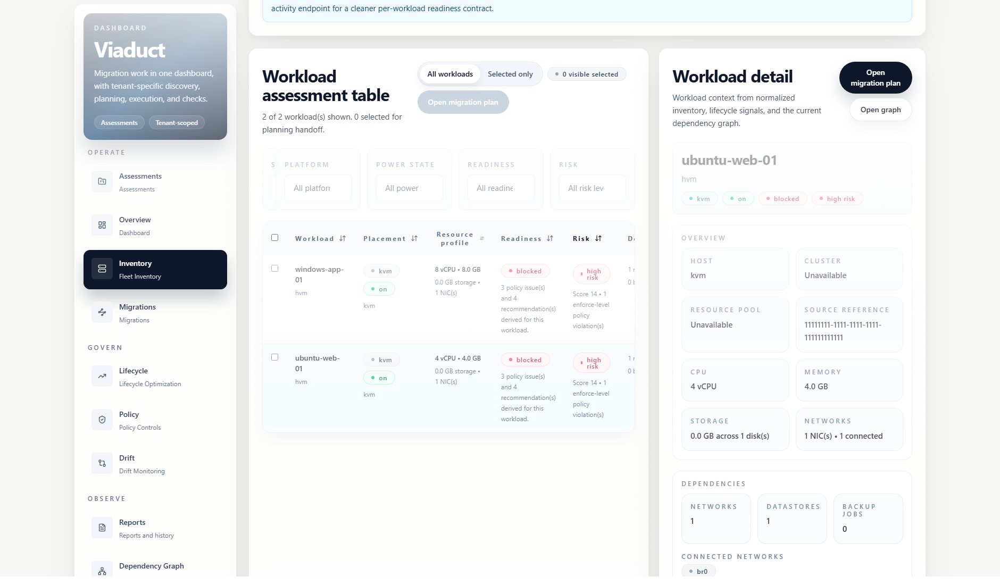

Inventory environments
Collect normalized inventory from supported virtualization platforms.
Open-source multi-platform migration planning
Viaduct helps teams inspect multi-platform environments, understand workload relationships, prepare migration plans, and create reviewable reports before a pilot.
It is built for virtualization admins, infrastructure managers, and IT architects who need a clear view of what exists, what depends on what, and what should be checked before moving workloads.

What Viaduct does
Collect normalized inventory from supported virtualization platforms.
Review workload, network, storage, and backup relationships before grouping moves.
Create plans from declarative specs, selectors, readiness checks, approvals, and waves.
Check configuration, policy, backup coverage, and runtime prerequisites before a pilot.
Export summaries that reviewers can use during planning, approval, and handoff.
Current dashboard



Platform support
Viaduct includes connectors for VMware, Proxmox, Hyper-V, KVM, and Nutanix inventory. Veeam support is available for backup and restore-point enrichment. Community connectors can be loaded through the plugin host.
Some connector validation is fixture-backed. Review the support matrix before using Viaduct in a live environment.
Read the support matrixInstall and verify
The GHCR image is the main packaged install path for v3.3.0. Native bundles, checksums, SBOMs, and release notes are published on GitHub Releases.
Use PostgreSQL and configure authentication for persistent deployments.
docker pull ghcr.io/eblackrps/viaduct:3.3.0
cosign verify ghcr.io/eblackrps/viaduct:3.3.0 \
--certificate-identity \
'https://github.com/eblackrps/Viaduct/.github/workflows/image.yml@refs/tags/v3.3.0' \
--certificate-oidc-issuer \
'https://token.actions.githubusercontent.com'Safe evaluation
No live hypervisor is required for the first run. The quickstart uses the included KVM fixtures so you can open the dashboard, create an assessment, inspect inventory, view dependencies, save a plan, and export a report locally.
Open QUICKSTART.md